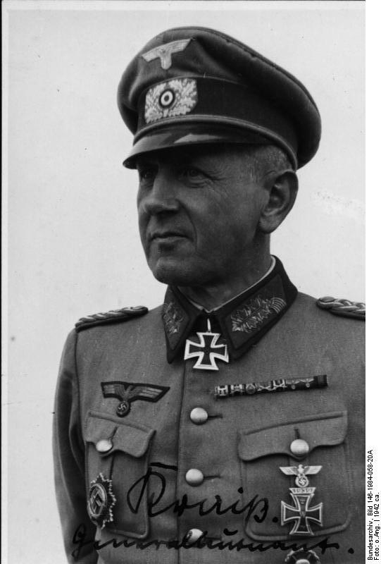
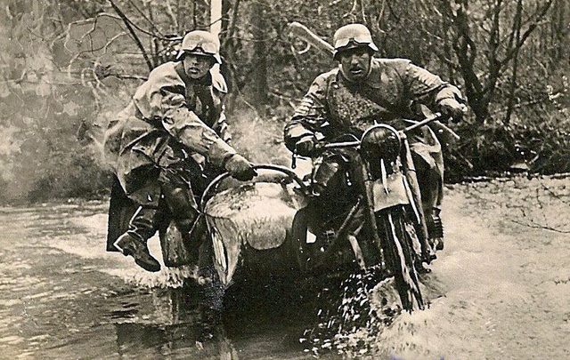
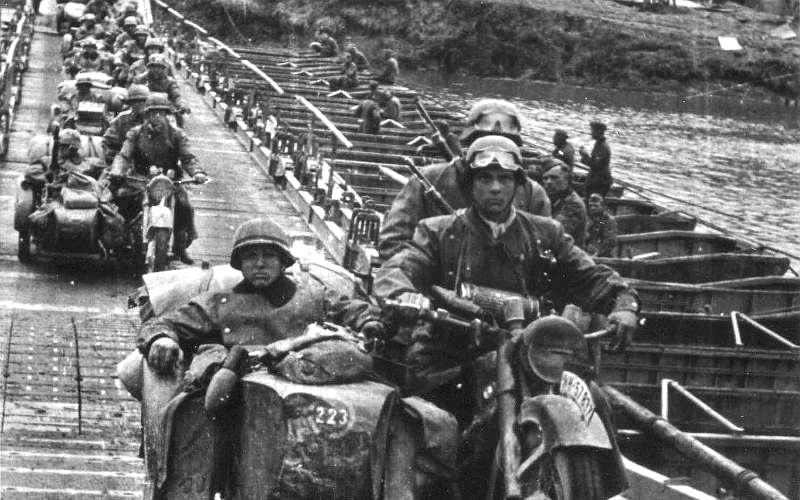

Fuerzas Armadas Alemanas durante la 2GM

Infantería Ligera
La infantería ligera es un tipo de infantería especializada para la incursión en profundidad dentro del territorio enemigo, equipada con medios ligeros (transporte blindado de personal, artillería ligera...) y gran movilidad para exploración y asalto de objetivos «complicados», teniendo por lo general la consideración de unidades de élite.
La 352.ª División de Infantería se formó en Francia en noviembre de 1943,1 siendo nombrado para mandarla el teniente general Dietrich Kraiss desde el 6 de noviembre de 1943 hasta la destrucción de la unidad en el sector de Saint-Lô a finales de julio de 1944. Los cuadros de la unidad procedían de la 268.ª División de Infantería y de la 321.ª División de Infantería, disueltas tras haber sido casi aniquiladas en el Frente Oriental. Era de una composición algo mejor que la mayor parte de las otras unidades de infantería alemanas desplegadas en 1944 en Normandía, si se tiene presente al 726.° Regimiento de Granaderos de la 716.ª División de Infantería (dos batallones), vinculado a la unidad.2 Su infantería consistía por ese motivo en cuatro regimientos compuestos cada uno de ellos por dos batallones, además de un batallón de reconocimiento (Füsilier Abteilung), con un total de nueve batallones de infantería. El 15 de marzo de 1944, por órdenes del general Erwin Rommel, la 352.ª División de Infantería avanzó sus posiciones hacia el mar, para así reforzar a la 716.ª División de Infantería alemana que ya se hallaba desplegada en la zona.3 Este desplazamiento parece haber pasado desapercibido para los Aliados. No obstante, la información al respecto había circulado entre el Alto Mando aliado (SHAEF), especialmente en la síntesis semanal del XXI Grupo de Ejércitos (la 21st Army group weekly Neptune Intelligence Review) de fecha 3 de junio de 1944.4 La presencia de esta división alemana en la playa de Omaha sería de todas maneras una sorpresa negativa para todos los escalones operativos estadounidenses.
La 352.ª División de Infantería inició en Normandía un conjunto de trabajos de mejora de las defensas costeras (Muro del Atlántico), con la siembra de campos de minas y la construcción de empalizadas. Estas obras requerían trabajos preparatorios lejos de las playas, en las que era necesario excavar la arena en profundidad para anclar sólidamente los materiales necesarios. Con el fin de poder cubrir el sector de la división, habrían sido necesarios diez millones de minas, pero la división sólo plantó las 6000 de que disponía. La primera línea de obstáculos, ubicada aproximadamente a 250 metros de la orilla, estaba constituida por las llamadas puertas belgas. Después habían unas líneas de pilares minados, llamados espárragos de Rommel. Finalmente, iba una última línea de obstáculos metálicos, entre ellos los llamados erizos checos. Pero pocos de esos obstáculos eran impermeables, y la corrosión causada por el agua de mar deterioró rápidamente las espoletas de los explosivos
Infantería pesada
El término infantería pesada hace referencia a tropas de infantería fuertemente armadas y con fuertes armaduras. El término se contrapone al de infantería ligera, compuesta también por soldados de a pie pero con un armamento relativamente menor. El término "infantería pesada" no tiene un uso claro en los ejércitos modernos. Se entiende que la infantería pesada tiene armas de fuego con mayor calibre y mayor poder de destrucción, por lo que utiliza armas pesadas como morteros, ametralladoras, lanzacohetes o lanzagranadas. El término infantería mecanizada se utiliza a menudo para referirse a aquella infantería que utiliza también vehículos blindados.
Las armas utilizadas generalmente por estos dos tipos són:
- Fusil de Cerrojo Mauser kar98k
- Ametralladoras Pesadas MG42 y MG34
- Subfusil Automatico MP40
- Sturmgewehr 44
- Casco M35 Todas estas armas se pueden ver en la imagen principal
Granaderos Panzer
Granaderos Panzer es la traducción al español del término de origen alemán (Acerca de este sonido Panzergrenadier (?·i)), que suele abreviarse como PzGren o Pzg. Se usa para referirse a las tropas de Infantería Motorizada o mecanizada, y empezaron a emplearse a mediados de la Segunda Guerra Mundial. Este tipo de tropas están en servicio hoy día en los Ejércitos de las Fuerzas Armadas de Austria, en el Ejército alemán y en el Ejército de Suiza.
 Kriegsmarine
La Kriegsmarine («Marina de guerra» en alemán) fue la armada del III Reich entre 1935 y 1945, sucesora de la Marina Imperial Alemana que combatió en la Primera Guerra Mundial y de la Reichsmarine de la República de Weimar. Era una de las tres ramas de la Wehrmacht, las fuerzas armadas unificadas de la Alemania nazi. Estaba compuesta por submarinos, fragatas, acorazados, acorazados de bolsillo, cruceros y destructores.